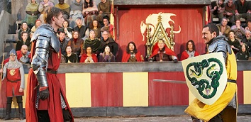
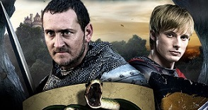

SNAKE
Trailer del gioco
 
ATTENTO! Il serpente sta per uccidere Merlino!
Fagli mangiare 20 mele avvelenate per ucciderlo.
Se sei riuscito a far mangiare al serpente
100 mele, prova
Snake +
Torna Indietro